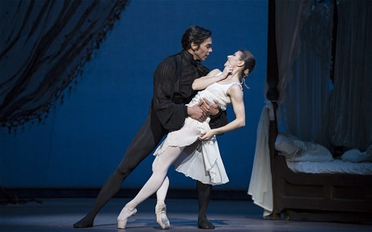

"Pushkin's anti-hero Eugene Onegin is suddenly flavour of the month, with a revival of the John Cranko ballet, a new Royal Opera production and a modern dance rethink by Deborah Colker. The Brazilian dancemaker calls her update Tatyana, and John Cranko might easily have done the same given that his version, made in 1965 for his Stuttgart company, is one of the great ballerina vehicles: a portrait of a young girl's doomed infatuation with a man who proves to be a toxic blend of self-loathing and self-regard. The Royal Ballet came late to Onegin, acquiring it in 2001: the high point of the late Australian Ross Stretton's undistinguished 13-month directorship. Alina Cojocaru was a little young when she first danced the heroine 12 years ago, but Saturday's opening showed her a complete mistress of the transition from bookish ingenue to queen of St Petersburg society. Fans will have missed the reckless spontaneity that Cojocaru enjoys with her scheduled Onegin, Johan Kobborg, but his gallant last-minute substitute, Stuttgart Ballet's Jason Reilly, provided a safe pair of hands for Cranko's acrobatic pairwork, and Cojocaru had drama enough for both. The tiny star hurled herself into the delirious duets and delivered a closing scene of remarkable complexity".
